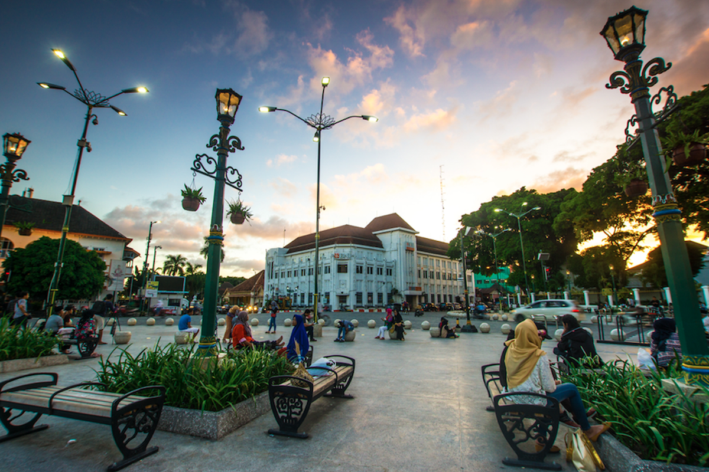

WELCOME TO JOGJA! Destinasi wisata bersejarah di indonesia!
Selamat datang! Website ini bertujuan untuk mengenalkan kamu terhadap destinasi wisata bersejarah yang sangat terkenal di Yogyakarta. Yuk, jelajahi keindahan dan sejarahnya!
Candi Borobudur
Candi Borobudur adalah candi Buddha terbesar di dunia yang dibangun pada abad ke-9. Tempat ini terkenal dengan arsitekturnya yang megah serta relief sejarah yang sangat indah.
Ketahui lebih lanjut
Candi Prambanan
Candi Prambanan merupakan kompleks candi Hindu terbesar di Indonesia yang dipersembahkan untuk Trimurti. Candi ini memiliki relief kisah Ramayana yang sangat terkenal.
Ketahui lebih lanjut
Jalan Malioboro
Jalan Malioboro adalah pusat keramaian dan ikon belanja di Yogyakarta. Kawasan ini sarat akan sejarah perkembangan Kota Jogja dan cocok untuk menikmati suasana malam hari.

Ketahui lebih lanjut